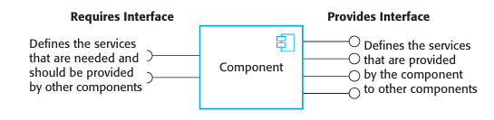
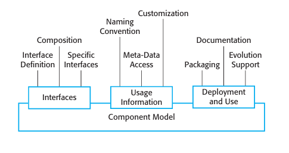
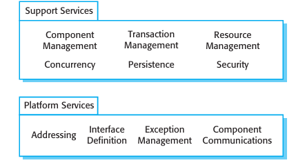

Chapter 17.1 Components and component models
There is general agreement in the CBSE community that a component is an independent software unit that can be composed with other components to create a software system. Beyond that, however, people have proposed varying definitions of a software component. Councill and Heineman (2001) define a component as:
“A software element that conforms to a standard component model and can be independently deployed and composed without modification according to a composition standard.”This definition is essentially based on standards so that a software unit that conforms to these standards is a component. Szyperski (2002), however, does not mention standards in his definition of a component but focuses instead on the key characteristics of components:
“A software component is a unit of composition with contractually-specified interfaces and explicit context dependencies only. A software component can be deployed independently and is subject to composition by third parties.”Both of these definitions are based on the notion of a component as an element that is included in a system, rather than a service that is referenced by the system. However, they are also compatible with the idea of a service as a component.
Szyperski also states that a component has no externally observable state. This means that copies of components are indistinguishable. However, some component models, such as the Enterprise Java Beans model, allow stateful components, so these do not correspond with Szyperski’s definition. Although stateless components are certainly simpler to use, there are some systems where stateful components are more convenient and reduce system complexity.
What the above definitions have in common is that they agree that components are independent, and that they are the fundamental unit of composition in a system. In my view, a better definition of a component can be derived by combining these
Chapter 17 Component-based software engineering
Component characteristics
proposals. Figure 17.1 shows what I consider to be the essential characteristics of a component as used in CBSE.
A useful way of thinking about a component is as a provider of one or more services. When a system needs a service, it calls on a component to provide that service without caring about where that component is executing or the programming language used to develop the component. For example, a component in a library system might provide a search service that allows users to search different library catalogs. A component that converts from one graphical format to another (e.g., TIFF to JPEG) provides a data conversion service, etc.
Viewing a component as a service provider emphasizes two critical characteristics of a reusable component:
- The component is an independent executable entity that is defined by its interfaces. You don’t need any knowledge of its source code to use it. It can either be referenced as an external service or included directly in a program.
- The services offered by a component are made available through an interface and all interactions are through that interface. The component interface is expressed in terms of parameterized operations and its internal state is never exposed.
17.1
Components and component models
Components are often implemented in object-oriented languages and, in some cases, accessing the ‘provides’ interface of a component is done through method calls. However, components and object classes are not the same thing. Unlike object classes, components are independently deployable, do not define types, are language-independent, and are based on a standard component model.
http://www.SoftwareEngineering-9.com/Web/CBSE/objects.htmlComponents have two related interfaces, as shown in Figure 17.2. These interfaces reflect the services that the component provides and the services that the component requires to operate correctly:
- The ‘provides’ interface defines the services provided by the component. This interface, essentially, is the component API. It defines the methods that can be called by a user of the component. In a UML component diagram, the ‘provides’ interface for a component is indicated by a circle at the end of a line from the component icon.
- The ‘requires’ interface specifies what services must be provided by other components in the system if a component is to operate correctly. If these are not available, then the component will not work. This does not compromise the independence or deployability of a component because the ‘requires’ interface does not define how these services should be provided. In the UML, the symbol for a ‘requires’ interface is a semicircle at the end of a line from the component icon. Notice that ‘provides’ and ‘requires’ interface icons can fit together like a ball and socket.
To illustrate these interfaces, Figure 17.3 shows a model of a component that has been designed to collect and collate information from an array of sensors. It runs autonomously to collect data over a period of time and, on request, provides collated data to a calling component. The ‘provides’ interface includes methods to add, remove, start, stop, and test sensors. The report method returns the sensor data that has been collected, and the listAll method provides information about the attached sensors. Although I have not shown this here, these methods have associated param eters specifying the sensor identifiers, locations, and so on
Component interfaces
Chapter 17
Component-based software engineering
A model of a data collector component
interface, accessed through sensorManagement. This interface has been designed to connect to different types of sensor so it does not include specific sensor operations such as Test, provideReading, etc. Instead, the commands used by a specific type of sensor are embedded in a string, which is a parameter to the operations in the ‘requires’ interface. Adaptor components parse this string and translate the embedded commands into the specific control interface of each type of sensor. I discuss the use of adaptors later in this chapter, where I show how the data collector component is linked to a sen sor (Figure 17.12).
A critical difference between a component as an external service and a compo nent as a program element is that services are completely independent entities. They do not have a ‘requires’ interface. Different programs can use these services without the need to implement any additional support required by the service.
17.1.1 Component models
A component model is a definition of standards for component implementation, documentation, and deployment. These standards are for component developers to ensure that components can interoperate. They are also for providers of component execution infrastructures who provide middleware to support component operation. Many component models have been proposed, but the most important models are now the WebServices model, Sun’s Enterprise Java Beans (EJB) model, and Microsoft’s .NET model (Lau and Wang, 2007).
The basic elements of an ideal component model are discussed by Weinreich and Sametinger (2001). I summarize these model elements in Figure 17.4. This diagram shows that the elements of a component model define the component interfaces, the information that you need to use the component in a program, and how a component should be deployed:
- Interfaces Components are defined by specifying their interfaces. The compo nent model specifies how the interfaces should be defined and the elements, such as operation names, parameters, and exceptions, which should be included in the interface definition. The model should also specify the language used to define the component interfaces. For web services, this is WSDL, which I discuss in 
- Usage In order for components to be distributed and accessed remotely, they need to have a unique name or handle associated with them. This has to be globally unique—for example, in EJB, a hierarchical name is generated with the root based on an Internet domain name. Services have a unique URI (Uniform Resource Identifier).
- Deployment The component model includes a specification of how components should be packaged for deployment as independent, executable entities. Because components are independent entities, they have to be packaged with all supporting software that is not provided by the component infrastructure, or is not defined in a ‘requires’ interface. Deployment information includes information about the contents of a package and its binary organization. Inevitably, as new requirements emerge, components will have to be changed or replaced. The component model may therefore include rules governing when and how component replacement is allowed. Finally, the component model may
Chapter 19; EJB is Java-specific so Java is used as the interface definition lan guage; in .NET, interfaces are defined using the Common Intermediate Language (CIL). Some component models require specific interfaces that must be defined by a component. These are used to compose the component with the component model infrastructure, which provides standardized services such as security and transaction management.
Component meta-data is data about the component itself, such as information about its interfaces and attributes. The meta-data is important because it allows users of the component to find out what services are provided and required. Component model implementations normally include specific ways (such as the use of a reflection interface in Java) to access this component meta-data.
Components are generic entities and, when deployed, they have to be configured to fit into an application system. For example, you could configure the Data collector component (Figure 17.2) by defining the maximum number of sensors in a sensor array. The component model may therefore specify how the binary components can be customized for a particular deployment environment.
Inevitably, as new requirements emerge, components will have to be changed or replaced. The component model may therefore include rules governing when and how component replacement is allowed. Finally, the component model may
define the component documentation that should be produced. This is used to find the component and to decide whether it is appropriate.
17.1
Components and component models
Middleware services defined in a component model
For components that are implemented as program units rather than external services, the component model sets out the services to be provided by the middleware that supports the executing components. Weinreich and Sametinger (2001) use the analogy of an operating system to explain component models. An operating system provides a set of generic services that can be used by applications. A component model implementation provides comparable shared services for components. Figure 17.5 shows some of the services that may be provided by an implementation of a component model.
The services provided by a component model implementation fall into two categories:
- Platform services, which enable components to communicate and interoperate in a distributed environment. These are the fundamental services that must be available in all component-based systems.
- Support services, which are common services that are likely to be required by many different components. For example, many components require authentication to ensure that the user of component services is authorized. It makes sense to provide a standard set of middleware services for use by all components. This reduces the costs of component development and potential component incompatibilities can be avoided.
The middleware implements the component services and provides interfaces to these services. To make use of the services provided by a component model infrastructure, you can think of the components as being deployed in a ‘container’. Acontainer is an implementation of the support services plus a definition of the interfaces that a component must provide to integrate it with the container. Including the component in the container means that the component can access the support services and the container can access the component interfaces. When in use, the component interfaces themselves are not accessed directly by other components; rather, they are accessed through a container interface that invokes code to access the interface of the embedded component.
Containers are large and complex and, when you deploy a component in a container, you get access to all middleware services. However, simple components may not need all of the facilities offered by the supporting middleware. The approach taken in web services to common service provision is therefore rather different. For web services, standards have been defined for common services such as transaction management and security and these standards have been implemented as program libraries. If you are implementing a service component, you only use the common services that you need.
CBSE processes